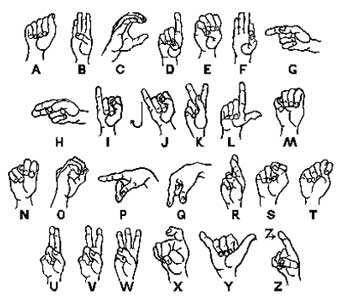

Object Detection

Tackled the challenge of detecting sign language using computer vision. We accomplished this by training a model on images of the American Sign Language (ASL) alphabet using the YOLOv5 model. We mainly focus on using object detection to recognize the ASL alphabet in real-time.
Language/Framework: Python, PyTorch